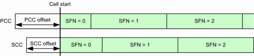

The parameters in this section configure the synchronization to other signaling applications and the synchronization of PCC and SCC.

Select the same synchronization zone in all signaling applications that you want to synchronize. "None" means that the application is not synchronized to other signaling applications.
The PCC and SCC of an LTE signaling application are always synchronized to each other, independent of this setting.
Synchronizing signaling applications means synchronizing the used system time. This feature is useful, for example, for evaluation of message logs, because the time stamps in the logs are synchronized.
Synchronizing two LTE signaling applications means also synchronizing the used system frame numbers.
Remote command:Configures the timing offset at cell start, relative to the time zone.
Without offset, the cell signal starts with system frame number 0 and a system time according to the time zone. With an offset, the cell starts with system frame number 0 plus the offset and a system time according to the time zone plus the offset.
Option R&S CMW-KS510 is required for the PCC setting. Option R&S CMW-KS512 is required for the SCC setting.
Setting different offsets for component carriers is required for example for performance requirement tests with carrier aggregation, see 3GPP TS 36.521 section "8.2.1.1.1_A".
